Using Charts
User page, as of 6 October 2026. How to load a table, give the columns roles, choose a chart type and draw lines, contours and 3D surfaces; how to set axes, colour scale, iso lines and data points, compute columns and save everything. The pictures are screenshots of the app with an invented rig test of a compressor (seven speeds, eleven operating points each).
Some pictures were taken before the English interface was complete and may still show German labels.
The window
Open the app from the Apps menu with New chart… or with Alt+D; a .csv file opens it directly.
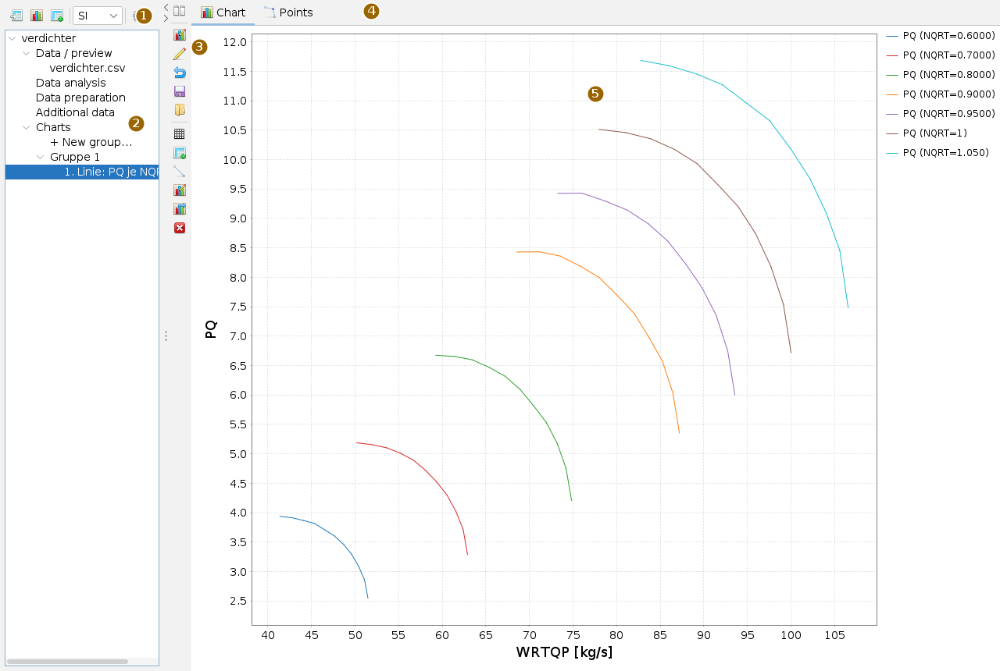
On the left is the navigator: the data source with its sub-items and below it the Charts, ordered in groups. Whatever you select in the navigator appears in the work area on the right – the load card, the table, the analysis, the definition of a group or a chart. The arrow on the divider folds the navigator away.
| Button (tooltip) | Effect |
|---|---|
| Load | Opens the load card (like a click on Data / preview). |
| Chart | Creates a new chart group and shows its definition. |
| Additional data (toggle) | While pressed, loaded files are added as additional data instead of replacing the primary data. |
| SI / Imp / RR | Display units for values and axes; redraw the charts afterwards. |
| Settings… | Card with the defaults of the app. |
A chart in six steps
- Load: in the load card choose the CSV file and check the delimiter; the preview shows the columns.
- Press Take over into the working data. The app writes the table into an H2 file next to the CSV; the navigator shows the source.
- Click Group 1 under Charts: the definition appears on the right.
- Search for a column in the selection field at the top and bring it into the table with Add, for every column the chart needs.
- Give every row a role in the Type column, for example
as x,as y,as f, and click a chart type below. - Plot (icon left of the table). The chart appears under its group in the navigator.
Loading data
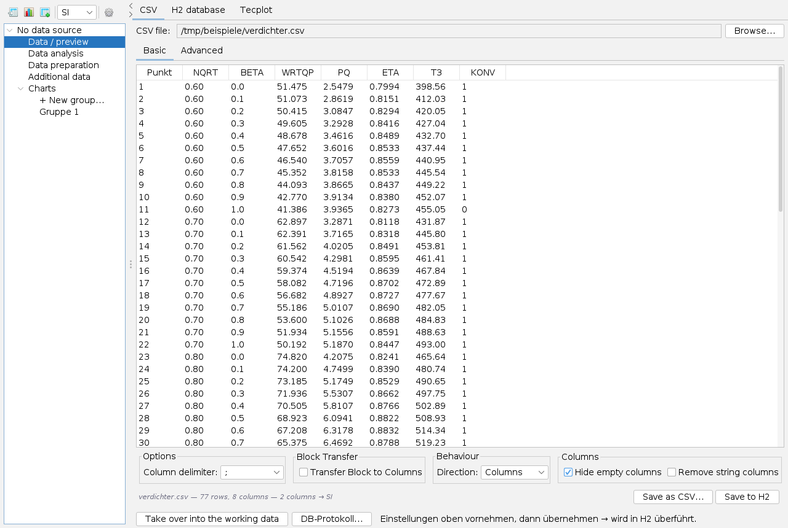
The load card has three tabs:
- CSV: Browse… chooses the file. Basic holds the column delimiter, block transfer, direction (swap rows and columns) and hiding empty columns; Advanced holds types and units per column. A header of the form
NAME [unit]supplies the unit, in the exampleWRTQP [kg/s]andT3 [K]; they are converted to SI. The line below the preview gives rows, columns and conversions. - H2 database: a finished H2 file (
.mv.db) and a table in it. It is mounted without a copy; units come from the table<TABLE>_UNITS. - Tecplot: a
.pltfile, optionally with its layout file (.plt.layor.lay). The box for using the layout file can only be ticked when one lies next to it; then the app takes axes, curves, colours and symbols from the layout, one chart per frame if there are several.
Take over into the working data makes the table the data source. After that the app reads columns only when a chart needs them and filters rows in the database. DB log… shows the commands sent to the database. Tables from other apps (for example the EPDS app) arrive without the load card.
Additional data: while the toggle in the toolbar is pressed, a further table is added under Additional data, for example a second run for comparison. Right-clicking the entry removes it again.
The navigator
- Data / preview: the load card; below it the taken-over file with its table, paged.
- Data analysis and Data preparation: see Analysis and preparation.
- Charts: + New group… creates a group. A group carries a definition (variables, roles, type); every plot adds a chart to it, numbered and named after type and variables. That way variants can be kept side by side.
- Right-click a group or chart: Delete group, Delete chart, Copy.
Variables and roles
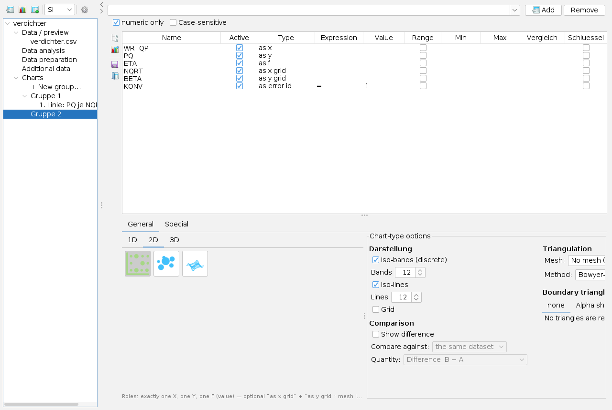
At the top the definition shows the search field with Add and Remove; numeric only and Case-sensitive narrow the list. The table has one row per variable:
| Column | Meaning |
|---|---|
| Active | the row counts; without the tick it stays but has no effect |
| Type | the role (table below) |
| Expression, Value | condition: =, >, >=, <, <= with a value; only rows that meet it are used |
| Range, Min, Max | condition as a range |
| Comparison, Key | condition for the comparison state, and the columns used to match the points of both states (see Comparison) |
| Role | Effect |
|---|---|
as x | horizontal axis |
as y | for lines: separates the curves, one per value (in the picture one per speed); for contour and 3D: vertical axis |
as z | third axis for 3D points and volume |
as f | function value: the curve, the colour of the contour, the height of the surface; several allowed for lines |
as f right | function value on a second, right-hand y axis (line types only) |
as x grid, as y grid, as z grid | which columns the mesh is built in, for example speed times beta for maps, instead of the picture coordinates |
as error id | convergence flag: condition met = converged. The row does not filter, it only marks. |
as unique id | identifier of a point; not drawn |
as constraint | condition only, no axis |
Roles are not guessed from column names. The line below the types says which roles the selected type needs. The four icons left of the table: Check structure (whether the data form an ordered grid), Plot, Save layout… and Load layout… – the layout is the state of the table as XML and is matched by column name when loaded.
Chart type
Below the table the tab General with 1D, 2D and 3D selects the type; one click on a picture is enough, unsuitable types are grey. The tab Special holds the Joule or T-s chart with its station editor. On the right are the Chart-type options.
| Group | Types |
|---|---|
| 1D | Line, Multi-line, Scatter, Area, Step, Time series, Candlestick (OHLC), Wind, Gantt, Bars, Bars stacked, Waterfall, Pie, Spider, Radar, Polar, Histogram, Box-whisker |
| 2D | 2D contour, Bubble, 3D surface (z = f(x, y)) |
| 3D | 3D scatter, 3D line, 3D bars, 3D area, 3D pie, 3D volume (iso-surfaces) |
| Special | Joule (T-s) with stations, streams and mixers |
For the contour the options set: Iso-bands (discrete) and their number, Iso-lines and their number, Grid, under Triangulation the Mesh (no mesh = grid contour, triangulation, or cell structure from zone/i/j) with the Method, and under boundary triangles the boundary method that discards long triangles at the edge. If you choose triangulation, you get it; if the app falls back, it says so and why. The heading Appearance is still German.
Lines
In the picture above: WRTQP as x, PQ as function value and NQRT as as y – every speed becomes its own curve, and the legend gives its value. Several columns with as f give several curves per group; as f right puts one of them on a right axis. Y logarithmic is in the type options. The Points tab next to Chart lays point series from the table over the picture, with their own conditions.
Contours
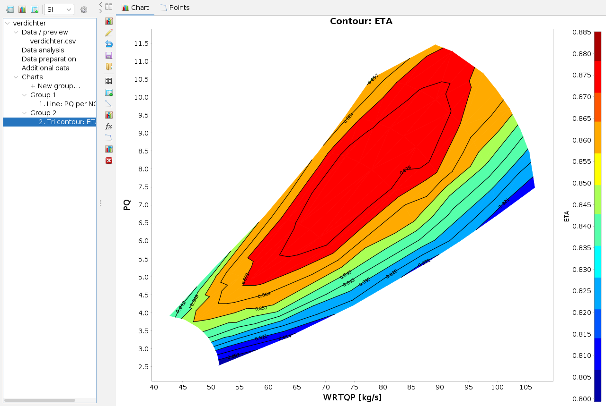
Ordered data such as a map need the grid roles: without them the triangulation in the picture flow against pressure ratio would connect points of neighbouring speeds across the gap and invent an area beyond the last point. With as x grid and as y grid the mesh is built where the data are ordered.
The chart bar
The vertical bar shows only the buttons the type of the chart needs. The buttons carry icons; the tooltip names the effect. The cards open in the option area between bar and chart; the top button shows and hides it.
| Tooltip | Effect | for |
|---|---|---|
| Show/hide options | option area on or off | all |
| Chart options | title, axes, legend, colour scale | all |
| Edit variables | back to the definition; Plot then changes this chart | all |
| Reset to origin | discards changes to the chart | all |
| Save, Load | settings of the chart as XML (2D *.chart.xml, 3D its own format) | line, contour, 3D |
| Plot | background, gridlines | line, contour |
| Data points | measured points, values, not converged | line, contour |
| Markers | value lines, bands, polygons | line, contour |
| Annotation | text and pointer | line, contour |
| Iso-lines | lines of equal value, also of another variable | contour |
| Touch up mesh | keep or discard single triangles | contour (triangulated) |
| Envelope | lines, areas and labels from an .hkx file | line, contour |
| Remove decorations | markers, annotations and envelope gone | line, contour |
Chart options and colour scale
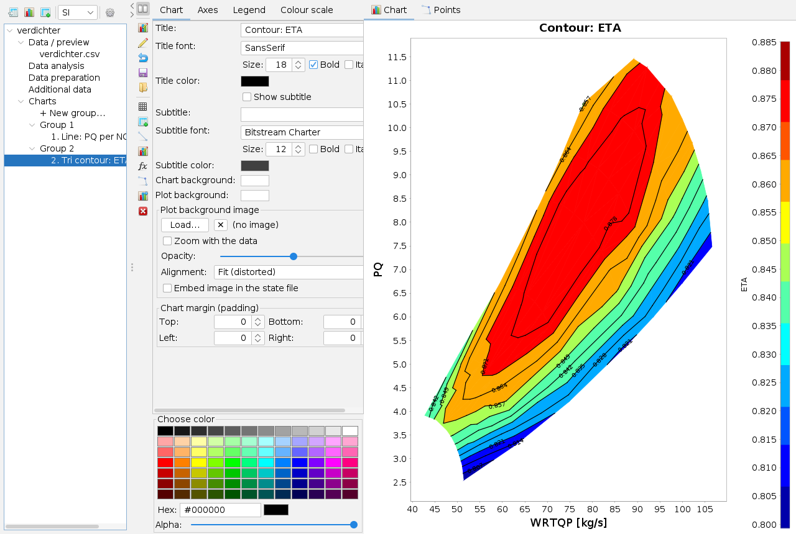
Tab Chart: title and subtitle with font and colour, backgrounds, a Plot background image (for example a scanned map) with opacity, alignment and Zoom with the data, optionally embedded in the state file, and the margins. Tab Axes: label, range, ticks and format per axis. Tab Legend: position, frame, font. The Choose color panel at the bottom applies to the colour field clicked last.
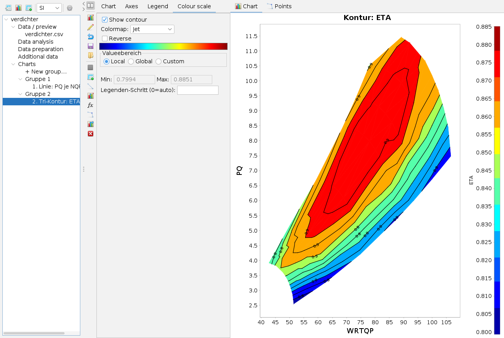
Value range: Local takes the range of the chart, Global that of the whole dataset (same colours in several charts), Custom the typed-in bounds. A fixed range applies only when it has been set. The legend step divides the colour scale. The frame title Value range is a broken translation.
Iso lines
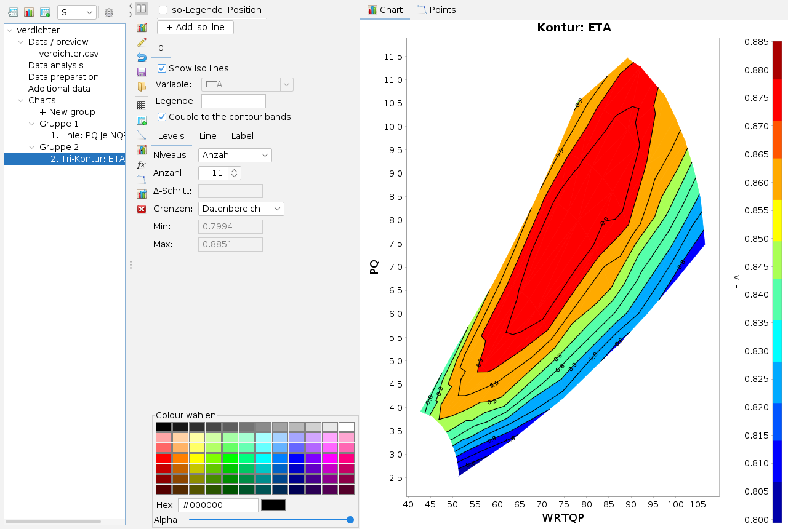
Every tab is one set of iso lines; + Add iso line creates another, for example for a different Variable on the same mesh. Couple to the contour bands puts the lines exactly on the band boundaries. Otherwise Levels (levels) chooses between count (Count) and Δ step (delta step), Bounds (bounds) between data range and own values. The tabs Line and Label set stroke, colour per level, labelling and the legend text; Iso legend shows a separate legend.
Data points
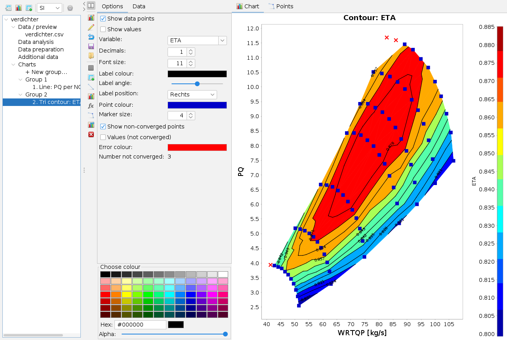
Show data points draws the points of the table over the chart, Show values (show values) writes the value of the chosen Variable next to them. With the role as error id the app distinguishes converged and non-converged points and counts the latter. The Data tab of the card shows the full row of a point clicked in the chart; the crosshair highlights it. Most labels on this card are still German.
Touch up mesh, markers, envelope
- Touch up mesh (triangulated contours only): Discard (discard) – a click into the picture removes a triangle; Restore (take back) restores a discarded one. The list gives the exceptions; they are saved with the chart.
- Markers: horizontal and vertical value lines, interval bands and polygons. Min/max marks give the value from the picture.
- Envelope: limit lines and areas from an
.hkxfile, each adjustable (colour, stroke, opacity, font, position, angle) via a tick tree.
Comparing two states
In the contour options Show difference shows the difference of two data states. Compare against chooses the state: the same dataset with other conditions (column Comparison of the table) or an additional table. Quantity: difference B − A, relative deviation or ratio. Points are matched via the columns ticked in Key; points without a partner and ambiguous ones are reported.
3D
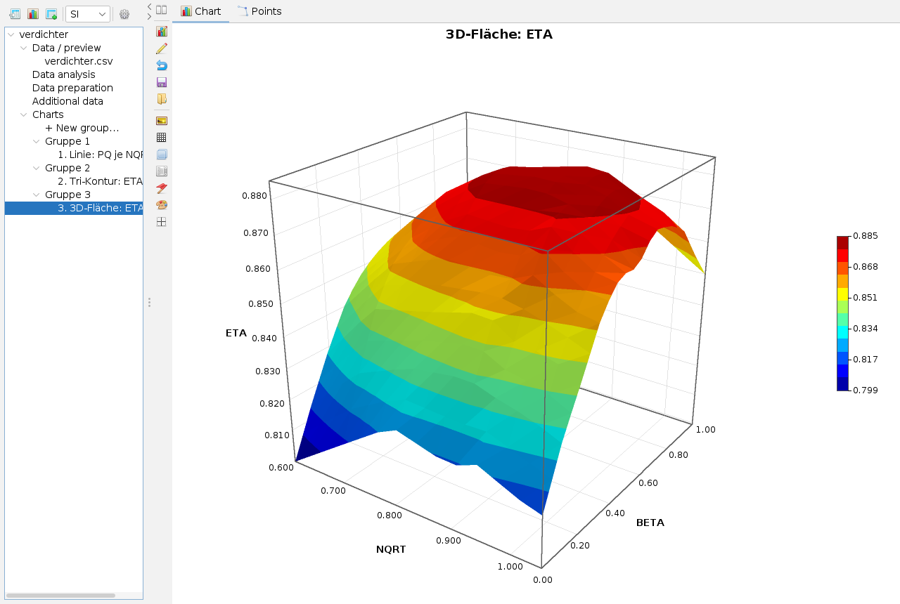
3D charts have their own bar: View (camera, depth, clip plane), Axes, Legends, Title, fonts, background, Marks and bands, Theme (light, dark, print), Cuts in x, y and z and, for the volume, Iso-surfaces (f = const). The card shown right after plotting sets surface, colour scale, value range and iso bands. The mouse rotates and zooms the picture. The volume uses the cell structure when the data allow it, otherwise Delaunay.
Analysis and preparation
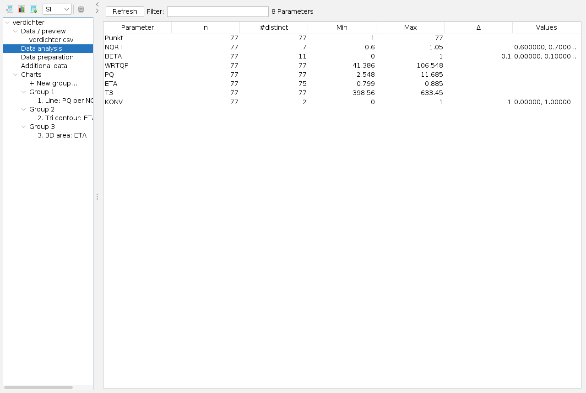
Data analysis counts per column the values, distinct values, minimum and maximum, the step for even steps, and lists a few values. It shows which column suits as y or a grid role. Filter narrows the list; a click on the header sorts.
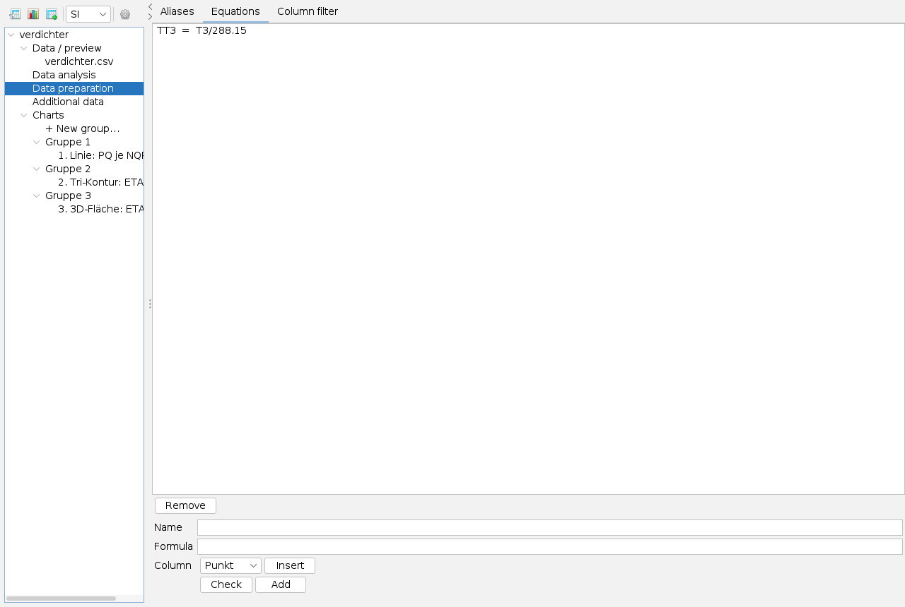
Data preparation has three tabs: Aliases (display name per column, shown on axes and legends), Equations (new columns from existing ones: Name, Formula, Check, Add) and Column filter (hide columns without disturbing charts). Equations may build on each other; the formula is saved, never the values.
Saving and sharing
- Chart definition: roles, aliases, equations, column filter and chart options as XML, without the data – so the same view can be applied to a new run. Files of the first version are still read.
- Settings of a chart via Save and Load in the chart bar.
- Picture: right-click into the chart – copy, save as PNG or SVG, print.
- Workspace: when the workspace is saved, the app remembers the path of the data source and the complete definition and restores both at the next start.
- App settings (gear) live in
settings.propertiesnext to the program so that the folder can be carried along.
Keyboard and mouse
Alt+D opens the app. Dragging with the mouse in the chart zooms to a region; the region stays, and undoing the zoom returns to typed-in axis limits. A click on a data point shows its row. In 3D dragging and the mouse wheel rotate and zoom. Right-click in the navigator and in the chart opens the context menus.
Limits
- The Joule chart lacks the input for the computed mixer; the calculation core is finished.
- The second y axis exists only for the line types.
- Not all option dialogs of the predecessor program have been turned into cards.
What the app can do and what it builds on is described in the overview.